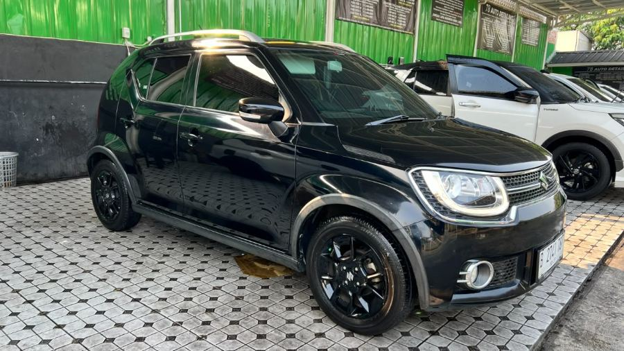
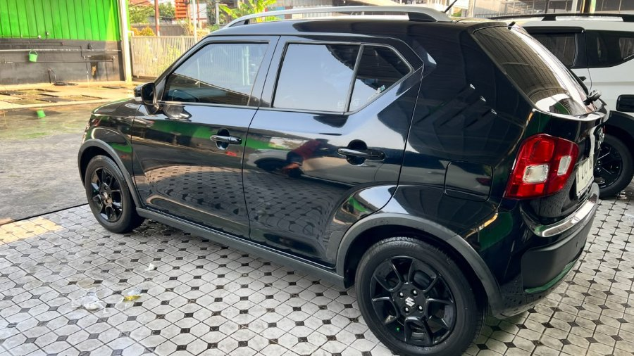

2017 Suzuki Ignis GX Matic
📍 Tangerang



Spesifikasi
- Kondisi
- Bekas
- Merek
- Suzuki
- Model
- Ignis GX Matic
- Varian
- GX
- Tahun
- 2017
- Jarak tempuh
- 38.000 km
- Transmisi
- Otomatis (AT)
- Bahan bakar
- Bensin
- Tipe bodi
- Citycar
- Warna
- Hitam
- Penumpang
- 5 orang
- Pintu
- 2
- Tangan ke-
- 1
- Plat nomor
- B
- Pajak (PKB) sampai
- Oktober 2027
Kelebihan unit
- Baru Perpanjang STNK
- Kaki Kaki Baru
- Ban Baru
- Service Berkala Rutin
Riwayat & dokumen
Servis: Service Berkala Rutin
Dokumen: BPKB, STNK, Faktur
Deskripsi
🚗 2017 SUZUKI IGNIS GX MATIC
Mobil Second • Siap Pakai • Kondisi Terawat
Dijual Suzuki Ignis GX Matic tahun 2017 dengan kondisi terawat dan siap digunakan untuk aktivitas sehari-hari.
✨ Spesifikasi & Keunggulan:
- Tahun: 2017
- Tipe: Suzuki Ignis GX
- Transmisi: Automatic / Matic
- Kilometer: 38.000 KM
- Pajak panjang
- Kaki-kaki & roda sudah baru
- Ban baru
- Kondisi siap pakai
- Cocok untuk penggunaan harian maupun kendaraan keluarga
Mobil second dengan kilometer rendah dan beberapa bagian penting sudah diperbarui, sehingga calon pemilik bisa lebih nyaman menggunakannya.
💰 Harga & detail kendaraan dapat ditanyakan langsung.
📲 Minat atau ingin melihat unit?
Hubungi:
Wins
WhatsApp: 0877-1020-8822
Instagram: @geelywins
Unit mobil second. Kondisi kendaraan dapat diperiksa langsung sebelum transaksi.
Cara membeli
Tidak ada pembayaran di situs ini. Hubungi kami lewat WhatsApp, atau buat janji melihat unit.